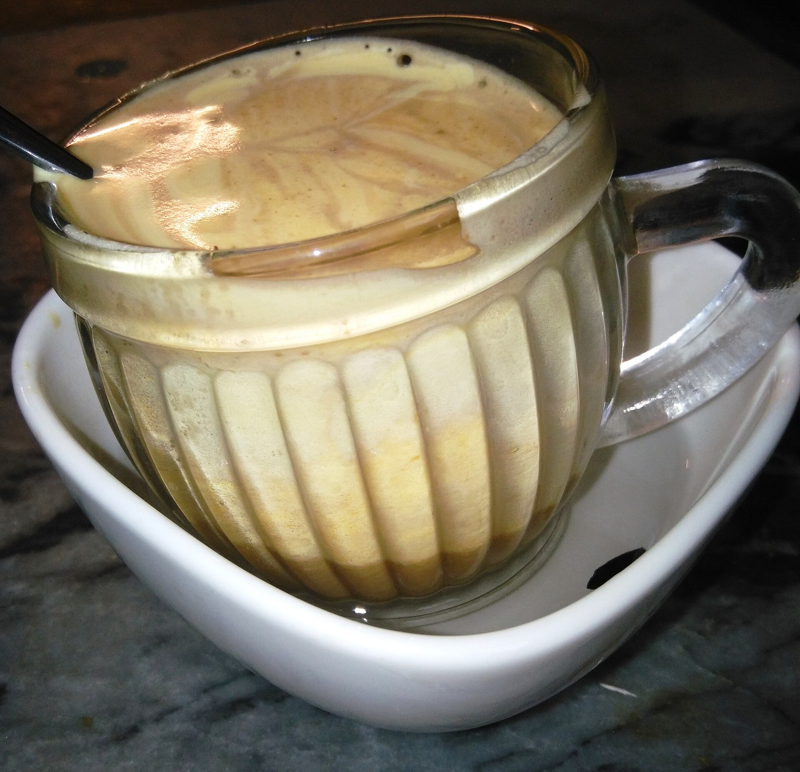
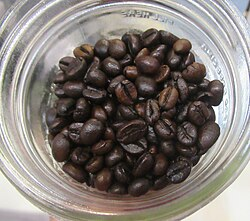
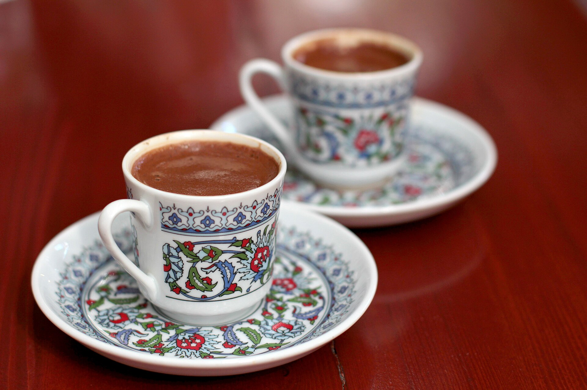

Coffee I've tasted Vietnamese Egg coffee, Japanese macha latte, Indonesian Kopi Luwak and Turkish coffee




If you'll like to read their description, you can use the following links:
Vietnamese Egg coffee
Japanese macha latte
Indonesian Kopi Luwak
Turkish coffee